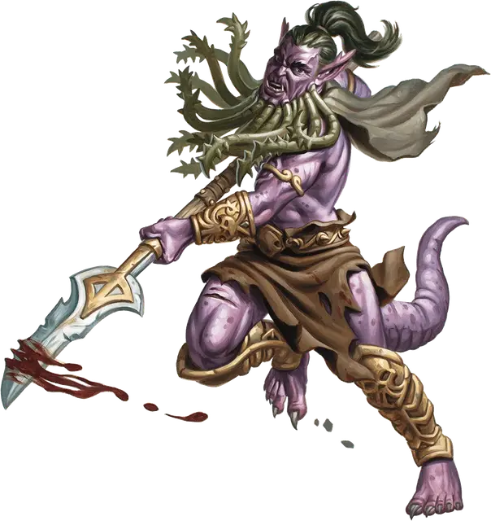

Бородатый дьявол (Барбазу)
Bearded Devil
Среднее Исчадие (Дьявол), законно-злое

Класс Доспеха 13 (природный доспех)
Хиты 52 (8к8 + 16)
Скорость 30 футов
| мод | спас | ||
|---|---|---|---|
| СИЛ | 16 | +3 | +5 |
| ЛОВ | 15 | +2 | +2 |
| ТЕЛ | 15 | +2 | +4 |
| мод | спас | ||
|---|---|---|---|
| ИНТ | 9 | −1 | −1 |
| МДР | 11 | +0 | +2 |
| ХАР | 11 | +0 | +0 |
Сопротивление урону холод; дробящий, колющий, рубящий от немагических атак, кроме нанесённых посеребрённым оружием
Иммунитет к урону огонь, яд
Иммунитет к состояниям отравление
Чувства тёмное зрение 120 футов, пассивное Восприятие 10
Языки Инфернальный, Телепатия 120 фт.
Опасность 3 (700 опыта)
Бонус мастерства +2
Особенности
Дьявольское зрение. Магическая тьма не мешает тёмному зрению дьявола.
Сопротивление магии. Дьявол совершает с преимуществом спасброски от заклинаний и прочих магических эффектов.
Уверенный. Дьявол не может быть испуган, если видит в пределах 30 футов от себя союзное существо.
Вариант: Призыв дьявола. У некоторых дьяволов может быть действие, позволяющее им призывать других дьяволов.
Призыв дьявола (1/день). Дьявол выбирает, кого призвать, и пытается это сделать. Бородатый дьявол получает 30% шанс призыва одного бородатого дьявола (Барбазу) [bearded devil].
Призванный дьявол появляется в свободном пространстве в пределах 60 футов от призывателя, и действует как его союзник, не имеющий способности призывать дьяволов. Он призывается на 1 минуту или пока призыватель не умрёт или действием его не отпустит.
Действия
Мультиатака. Дьявол совершает две атаки: одну бородой, и одну глефой.
Борода. Рукопашная атака оружием: +5 к попаданию, досягаемость 5 футов, одно существо. Попадание: Колющий урон 6 (1к8 + 2), и цель должна преуспеть в спасброске Телосложения Сл 12, иначе станет отравленной на 1 минуту. Будучи отравленной таким образом, цель не может восстанавливать хиты. Цель может повторять этот спасбросок в конце каждого своего хода, оканчивая эффект на себе при успехе.
Глефа. Рукопашная атака оружием: +5 к попаданию, досягаемость 10 футов, одна цель. Попадание: Рубящий урон 8 (1к10 + 3). Если цель — существо, не являющееся ни нежитью, ни конструктом, она должна преуспеть в спасброске Телосложения Сл 12, иначе будет терять 5 (1к10) хитов в начале каждого своего хода из-за инфернальной раны. Каждый раз, когда дьявол попадает этой атакой по цели, уже имеющей эту рану, урон от раны увеличивается на 5 (1к10). Любое существо может залечить рану, если действием совершит успешную проверку Мудрости (Медицина) Сл 12. Эта рана также закрывается, если цель получит магическое лечение.
Описание
Бородатые дьяволы служат ударной силой для архидьяволов, сражаясь плечом к плечу и упиваясь славой битвы. Они отвечают насилием на любое пренебрежение, реальное или воображаемое, упиваясь жестокостью, когда их зазубренные клинки разрубают врагов.
Бородатые дьяволы похожи на человека с заострёнными ушами, чешуйчатой кожей, длинным хвостом и когтями, выдающими их жестокую натуру. Эти дьяволы получили своё название из-за змееподобных отростков на подбородках, которые они используют, чтобы атаковать и отравлять врагов, ослабляя их опасным ядом.
См. дополнительно статью: "Бестиарий: Дьяволы"